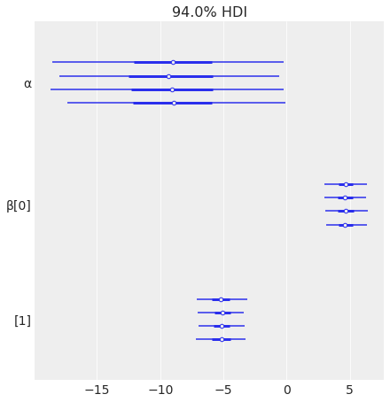
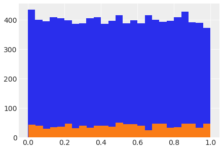

Logistic Regression
Contents
Logistic Regression#
Ref: Chap 4 of Mar18
https://cfteach.github.io/brds/referencesmd.html
import pymc3 as pm
import numpy as np
import pandas as pd
import theano.tensor as tt
import seaborn as sns
import scipy.stats as stats
from scipy.special import expit as logistic
import matplotlib.pyplot as plt
import arviz as az
import requests
import io
az.style.use('arviz-darkgrid')
z = np.linspace(-8, 8)
plt.plot(z, 1 / (1 + np.exp(-z)))
plt.xlabel('z')
plt.ylabel('logistic(z)')
Text(0, 0.5, 'logistic(z)')
The Iris Dataset#
target_url = 'https://raw.githubusercontent.com/cfteach/brds/main/datasets/iris.csv'
download = requests.get(target_url).content
iris = pd.read_csv(io.StringIO(download.decode('utf-8')))
iris.head()
| sepal_length | sepal_width | petal_length | petal_width | species | |
|---|---|---|---|---|---|
| 0 | 5.1 | 3.5 | 1.4 | 0.2 | setosa |
| 1 | 4.9 | 3.0 | 1.4 | 0.2 | setosa |
| 2 | 4.7 | 3.2 | 1.3 | 0.2 | setosa |
| 3 | 4.6 | 3.1 | 1.5 | 0.2 | setosa |
| 4 | 5.0 | 3.6 | 1.4 | 0.2 | setosa |
#using stripplot function from seaborn
sns.stripplot(x="species", y="sepal_length", data=iris, jitter=True)
<AxesSubplot:xlabel='species', ylabel='sepal_length'>
sns.pairplot(iris, hue='species', diag_kind='kde')
/Users/cfanelli/Desktop/teaching/BRDS/jupynb_env_new/lib/python3.9/site-packages/seaborn/axisgrid.py:88: UserWarning: This figure was using constrained_layout, but that is incompatible with subplots_adjust and/or tight_layout; disabling constrained_layout.
self._figure.tight_layout(*args, **kwargs)
<seaborn.axisgrid.PairGrid at 0x16b6b20d0>
The logistic model applied to the iris dataset#
df = iris.query("species == ('setosa', 'versicolor')")
df
| sepal_length | sepal_width | petal_length | petal_width | species | |
|---|---|---|---|---|---|
| 0 | 5.1 | 3.5 | 1.4 | 0.2 | setosa |
| 1 | 4.9 | 3.0 | 1.4 | 0.2 | setosa |
| 2 | 4.7 | 3.2 | 1.3 | 0.2 | setosa |
| 3 | 4.6 | 3.1 | 1.5 | 0.2 | setosa |
| 4 | 5.0 | 3.6 | 1.4 | 0.2 | setosa |
| ... | ... | ... | ... | ... | ... |
| 95 | 5.7 | 3.0 | 4.2 | 1.2 | versicolor |
| 96 | 5.7 | 2.9 | 4.2 | 1.3 | versicolor |
| 97 | 6.2 | 2.9 | 4.3 | 1.3 | versicolor |
| 98 | 5.1 | 2.5 | 3.0 | 1.1 | versicolor |
| 99 | 5.7 | 2.8 | 4.1 | 1.3 | versicolor |
100 rows × 5 columns
y_0 = pd.Categorical(df['species']).codes
print(y_0, len(y_0))
[0 0 0 0 0 0 0 0 0 0 0 0 0 0 0 0 0 0 0 0 0 0 0 0 0 0 0 0 0 0 0 0 0 0 0 0 0
0 0 0 0 0 0 0 0 0 0 0 0 0 1 1 1 1 1 1 1 1 1 1 1 1 1 1 1 1 1 1 1 1 1 1 1 1
1 1 1 1 1 1 1 1 1 1 1 1 1 1 1 1 1 1 1 1 1 1 1 1 1 1] 100
# let's select one variate
x_n = 'sepal_length'
x_0 = df[x_n].values
#print(x_0)
# let's center our dataset, as we have done in other exercises
x_c = x_0 - x_0.mean()
print(x_c)
[-0.371 -0.571 -0.771 -0.871 -0.471 -0.071 -0.871 -0.471 -1.071 -0.571
-0.071 -0.671 -0.671 -1.171 0.329 0.229 -0.071 -0.371 0.229 -0.371
-0.071 -0.371 -0.871 -0.371 -0.671 -0.471 -0.471 -0.271 -0.271 -0.771
-0.671 -0.071 -0.271 0.029 -0.571 -0.471 0.029 -0.571 -1.071 -0.371
-0.471 -0.971 -1.071 -0.471 -0.371 -0.671 -0.371 -0.871 -0.171 -0.471
1.529 0.929 1.429 0.029 1.029 0.229 0.829 -0.571 1.129 -0.271
-0.471 0.429 0.529 0.629 0.129 1.229 0.129 0.329 0.729 0.129
0.429 0.629 0.829 0.629 0.929 1.129 1.329 1.229 0.529 0.229
0.029 0.029 0.329 0.529 -0.071 0.529 1.229 0.829 0.129 0.029
0.029 0.629 0.329 -0.471 0.129 0.229 0.229 0.729 -0.371 0.229]
with pm.Model() as model_0:
α = pm.Normal('α', mu=0, sd=10)
β = pm.Normal('β', mu=0, sd=10)
μ = α + pm.math.dot(x_c, β)
θ = pm.Deterministic('θ', pm.math.sigmoid(μ))
bd = pm.Deterministic('bd', -α/β)
yl = pm.Bernoulli('yl', p=θ, observed=y_0)
trace_0 = pm.sample(2000, tune = 2000, return_inferencedata=True)
Auto-assigning NUTS sampler...
Initializing NUTS using jitter+adapt_diag...
Multiprocess sampling (4 chains in 4 jobs)
NUTS: [β, α]
100.00% [16000/16000 00:01<00:00 Sampling 4 chains, 0 divergences]
/Users/cfanelli/Desktop/teaching/BRDS/jupynb_env_new/lib/python3.9/site-packages/scipy/stats/_continuous_distns.py:624: RuntimeWarning: overflow encountered in _beta_ppf
return _boost._beta_ppf(q, a, b)
/Users/cfanelli/Desktop/teaching/BRDS/jupynb_env_new/lib/python3.9/site-packages/scipy/stats/_continuous_distns.py:624: RuntimeWarning: overflow encountered in _beta_ppf
return _boost._beta_ppf(q, a, b)
/Users/cfanelli/Desktop/teaching/BRDS/jupynb_env_new/lib/python3.9/site-packages/scipy/stats/_continuous_distns.py:624: RuntimeWarning: overflow encountered in _beta_ppf
return _boost._beta_ppf(q, a, b)
/Users/cfanelli/Desktop/teaching/BRDS/jupynb_env_new/lib/python3.9/site-packages/scipy/stats/_continuous_distns.py:624: RuntimeWarning: overflow encountered in _beta_ppf
return _boost._beta_ppf(q, a, b)
Sampling 4 chains for 2_000 tune and 2_000 draw iterations (8_000 + 8_000 draws total) took 9 seconds.
varnames = ['α', 'β', 'bd']
res = az.summary(trace_0)
#print(res)
az.summary(trace_0)
| mean | sd | hdi_3% | hdi_97% | mcse_mean | mcse_sd | ess_bulk | ess_tail | r_hat | |
|---|---|---|---|---|---|---|---|---|---|
| α | 0.311 | 0.337 | -0.303 | 0.953 | 0.005 | 0.004 | 4813.0 | 4181.0 | 1.0 |
| β | 5.385 | 1.039 | 3.520 | 7.397 | 0.016 | 0.011 | 4358.0 | 4898.0 | 1.0 |
| θ[0] | 0.165 | 0.058 | 0.059 | 0.270 | 0.001 | 0.001 | 5587.0 | 5727.0 | 1.0 |
| θ[1] | 0.068 | 0.036 | 0.010 | 0.133 | 0.000 | 0.000 | 5327.0 | 5439.0 | 1.0 |
| θ[2] | 0.027 | 0.020 | 0.001 | 0.063 | 0.000 | 0.000 | 5127.0 | 5376.0 | 1.0 |
| ... | ... | ... | ... | ... | ... | ... | ... | ... | ... |
| θ[96] | 0.814 | 0.066 | 0.693 | 0.930 | 0.001 | 0.001 | 4311.0 | 4487.0 | 1.0 |
| θ[97] | 0.980 | 0.017 | 0.950 | 1.000 | 0.000 | 0.000 | 4107.0 | 4545.0 | 1.0 |
| θ[98] | 0.165 | 0.058 | 0.059 | 0.270 | 0.001 | 0.001 | 5587.0 | 5727.0 | 1.0 |
| θ[99] | 0.814 | 0.066 | 0.693 | 0.930 | 0.001 | 0.001 | 4311.0 | 4487.0 | 1.0 |
| bd | -0.057 | 0.062 | -0.173 | 0.060 | 0.001 | 0.001 | 5038.0 | 5096.0 | 1.0 |
103 rows × 9 columns
theta_post= trace_0.posterior['θ']
print(np.shape(theta_post))
(4, 2000, 100)
theta = trace_0.posterior['θ'].mean(axis=0).mean(axis=0)
idx = np.argsort(x_c)
np.random.seed(123)
plt.plot(x_c[idx], theta[idx], color='C2', lw=3)
plt.vlines(trace_0.posterior['bd'].mean(), 0, 1, color='k')
bd_hpd = az.hdi(trace_0.posterior['bd'])
plt.fill_betweenx([0, 1], bd_hpd.bd[0].values, bd_hpd.bd[1].values, color='k', alpha=0.5)
plt.scatter(x_c, np.random.normal(y_0, 0.02),
marker='.', color=[f'C{x}' for x in y_0])
az.plot_hdi(x_c, trace_0.posterior['θ'], color='C2') #green band
plt.xlabel(x_n)
plt.ylabel('θ', rotation=0)
# use original scale for xticks
locs, _ = plt.xticks()
plt.xticks(locs, np.round(locs + x_0.mean(), 1))
([<matplotlib.axis.XTick at 0x28da37220>,
<matplotlib.axis.XTick at 0x28da37ca0>,
<matplotlib.axis.XTick at 0x28d99fb80>,
<matplotlib.axis.XTick at 0x28d931c10>,
<matplotlib.axis.XTick at 0x28d938df0>,
<matplotlib.axis.XTick at 0x28d9389a0>,
<matplotlib.axis.XTick at 0x28d9040d0>,
<matplotlib.axis.XTick at 0x28d931fa0>],
[Text(-1.5, 0, '4.0'),
Text(-1.0, 0, '4.5'),
Text(-0.5, 0, '5.0'),
Text(0.0, 0, '5.5'),
Text(0.5, 0, '6.0'),
Text(1.0, 0, '6.5'),
Text(1.5, 0, '7.0'),
Text(2.0, 0, '7.5')])
Multiple logistic regression#
df = iris.query("species == ('setosa', 'versicolor')")
y_1 = pd.Categorical(df['species']).codes
x_n = ['sepal_length', 'sepal_width']
x_1 = df[x_n].values
with pm.Model() as model_1:
α = pm.Normal('α', mu=0, sd=10)
β = pm.Normal('β', mu=0, sd=2, shape=len(x_n))
μ = α + pm.math.dot(x_1, β)
θ = pm.Deterministic('θ', 1 / (1 + pm.math.exp(-μ)))
bd = pm.Deterministic('bd', -α/β[1] - β[0]/β[1] * x_1[:,0])
yl = pm.Bernoulli('yl', p=θ, observed=y_1)
trace_1 = pm.sample(2000, tune=4000, return_inferencedata=True, target_accept=0.9)
Auto-assigning NUTS sampler...
Initializing NUTS using jitter+adapt_diag...
Multiprocess sampling (4 chains in 4 jobs)
NUTS: [β, α]
100.00% [24000/24000 00:09<00:00 Sampling 4 chains, 0 divergences]
/Users/cfanelli/Desktop/teaching/BRDS/jupynb_env_new/lib/python3.9/site-packages/scipy/stats/_continuous_distns.py:624: RuntimeWarning: overflow encountered in _beta_ppf
return _boost._beta_ppf(q, a, b)
/Users/cfanelli/Desktop/teaching/BRDS/jupynb_env_new/lib/python3.9/site-packages/scipy/stats/_continuous_distns.py:624: RuntimeWarning: overflow encountered in _beta_ppf
return _boost._beta_ppf(q, a, b)
/Users/cfanelli/Desktop/teaching/BRDS/jupynb_env_new/lib/python3.9/site-packages/scipy/stats/_continuous_distns.py:624: RuntimeWarning: overflow encountered in _beta_ppf
return _boost._beta_ppf(q, a, b)
/Users/cfanelli/Desktop/teaching/BRDS/jupynb_env_new/lib/python3.9/site-packages/scipy/stats/_continuous_distns.py:624: RuntimeWarning: overflow encountered in _beta_ppf
return _boost._beta_ppf(q, a, b)
Sampling 4 chains for 4_000 tune and 2_000 draw iterations (16_000 + 8_000 draws total) took 17 seconds.
varnames = ['α', 'β']
az.plot_forest(trace_1, var_names=varnames);

idx = np.argsort(x_1[:,0])
bd_mean = trace_1.posterior['bd'].mean(axis=0).mean(axis=0)
plt.scatter(x_1[:,0], x_1[:,1], c=[f'C{x}' for x in y_0])
bd = bd_mean[idx]
plt.plot(x_1[:,0][idx], bd, color='k');
az.plot_hdi(x_1[:,0], trace_1.posterior['bd'], color='k')
plt.xlabel(x_n[0])
plt.ylabel(x_n[1])
Text(0, 0.5, 'sepal_width')
Question in class (from D. Zhu): why is the decision boundary linear?#
with pm.Model() as model_2:
α = pm.Normal('α', mu=0, sd=10)
β = pm.Normal('β', mu=0, sd=2, shape=len(x_n))
𝛾 = pm.Normal('𝛾', mu=0, sd=2)
μ = α + pm.math.dot(x_1, β) + pm.math.dot(x_1[:,0]**2, 𝛾)
θ = pm.Deterministic('θ', 1 / (1 + pm.math.exp(-μ)))
bd = pm.Deterministic('bd', -α/β[1] - β[0]/β[1] * x_1[:,0] - 𝛾/β[1] * x_1[:,0]**2)
yl = pm.Bernoulli('yl', p=θ, observed=y_1)
trace_2 = pm.sample(2000, tune=4000, return_inferencedata=True, target_accept=0.95)
Auto-assigning NUTS sampler...
Initializing NUTS using jitter+adapt_diag...
Multiprocess sampling (4 chains in 4 jobs)
NUTS: [𝛾, β, α]
100.00% [24000/24000 00:19<00:00 Sampling 4 chains, 0 divergences]
/Users/cfanelli/Desktop/teaching/BRDS/jupynb_env_new/lib/python3.9/site-packages/scipy/stats/_continuous_distns.py:624: RuntimeWarning: overflow encountered in _beta_ppf
return _boost._beta_ppf(q, a, b)
/Users/cfanelli/Desktop/teaching/BRDS/jupynb_env_new/lib/python3.9/site-packages/scipy/stats/_continuous_distns.py:624: RuntimeWarning: overflow encountered in _beta_ppf
return _boost._beta_ppf(q, a, b)
/Users/cfanelli/Desktop/teaching/BRDS/jupynb_env_new/lib/python3.9/site-packages/scipy/stats/_continuous_distns.py:624: RuntimeWarning: overflow encountered in _beta_ppf
return _boost._beta_ppf(q, a, b)
/Users/cfanelli/Desktop/teaching/BRDS/jupynb_env_new/lib/python3.9/site-packages/scipy/stats/_continuous_distns.py:624: RuntimeWarning: overflow encountered in _beta_ppf
return _boost._beta_ppf(q, a, b)
Sampling 4 chains for 4_000 tune and 2_000 draw iterations (16_000 + 8_000 draws total) took 26 seconds.
idx = np.argsort(x_1[:,0])
bd_mean = trace_2.posterior['bd'].mean(axis=0).mean(axis=0)
plt.scatter(x_1[:,0], x_1[:,1], c=[f'C{x}' for x in y_0])
bd = bd_mean[idx]
plt.plot(x_1[:,0][idx], bd, color='k');
az.plot_hdi(x_1[:,0], trace_2.posterior['bd'], color='k')
plt.xlabel(x_n[0])
plt.ylabel(x_n[1])
Text(0, 0.5, 'sepal_width')
y_pred_2 = pm.sample_posterior_predictive(trace_2, 200, model_2)
/Users/cfanelli/Desktop/teaching/BRDS/jupynb_env_new/lib/python3.9/site-packages/pymc3/sampling.py:1708: UserWarning: samples parameter is smaller than nchains times ndraws, some draws and/or chains may not be represented in the returned posterior predictive sample
warnings.warn(
100.00% [200/200 00:00<00:00]
How to plot a variate distributed according to a PyMC model#
with pm.Model() as model_testv:
testv = pm.Beta('testv',1.,1.)
syn1 = testv.random(size=10000)
plt.hist(syn1, bins=25);
syn2 = testv.random(size=1000)
plt.hist(syn2, bins=25);
